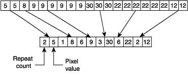

Run-length encoding (RLE) is a very simple form of lossless data compression in which runs of data (that is, sequences in which the same data value occurs in many consecutive data elements) are stored as a single data value and count, rather than as the original run. This is most useful on data that contains many such runs. Consider, for example, simple graphic images such as icons, line drawings, and animations. It is not useful with files that don't have many runs as it could greatly increase the file size.
For example, consider a screen containing plain black text on a solid white background. There will be many long runs of white pixels in the blank space, and many short runs of black pixels within the text. A hypothetical scan line, with B representing a black pixel and W representing white, might read as follows:
WWWWWWWWWWWWBWWWWWWWWWWWWBBBWWWWWWWWWWWWWWWWWWWWWWWWBWWWWWWWWWWWWWW
With a run-length encoding (RLE) data compression algorithm applied to the above hypothetical scan line, it can be rendered as follows:
12W1B12W3B24W1B14W
This can be interpreted as a sequence of twelve Ws, one B, twelve Ws, three Bs, etc.

Theory source : www.wikipedia.org,
Procedural Elements of Computer Graphics - David F. Rogers.